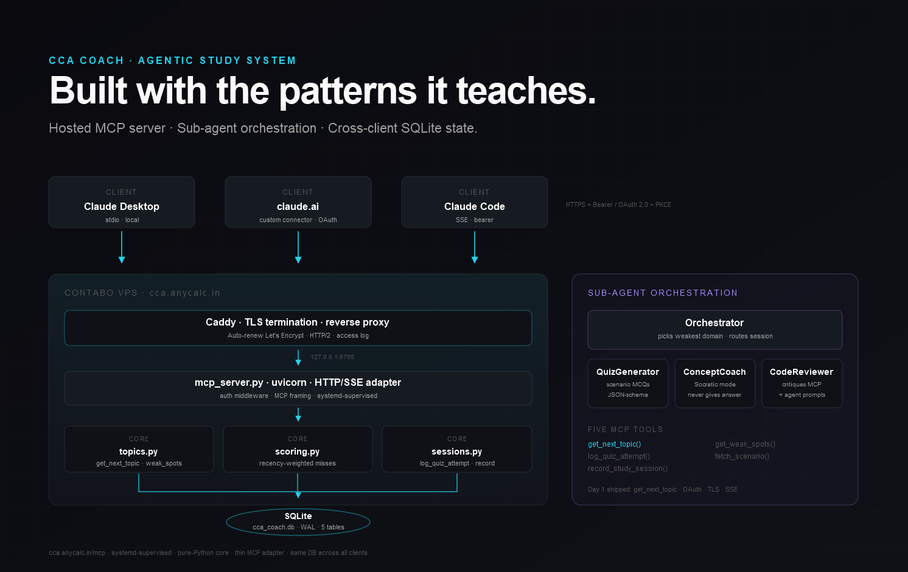

An agentic study companion for the Claude Certified Architect (CCA) Foundations exam. Hosted MCP server, sub-agent orchestration, real evals. Used daily.
The CCA exam tests architectural judgment — when to fan out to sub-agents, how to design MCP tools that recover gracefully, how to budget context across long-running workflows. You don’t get that from flashcards. You get it from shipping the thing.
A Contabo VPS hosts the MCP server behind Caddy TLS termination. Any Claude client — Desktop, claude.ai, Claude Code — connects with a bearer token (or OAuth 2.0 + PKCE for claude.ai). The orchestrator picks the weakest exam domain, dispatches a worker, persists the attempt, updates the score. Same SQLite. Same truth. Every client.

A three-phase rhythm. Reading happens outside the tool — primary sources only. Consolidation happens inside the tool through Socratic dialogue. Reinforcement is automatic: tomorrow’s session opens with what was missed yesterday.
Every architectural choice maps to one of the five exam domains. The codebase is the curriculum.
| Exam domain | Weight | Where it shows up |
|---|---|---|
| Agentic Architecture & Orchestration | 27% | orchestrator.py + workers/ (orchestrator-worker pattern) |
| Claude Code Configuration & Workflows | 20% | .claude/ skills + hooks (stretch) |
| Prompt Engineering & Structured Output | 20% | Worker prompts + JSON-schema tool outputs |
| Tool Design & MCP Integration | 18% | mcp_server.py + oauth.py |
| Context Management & Reliability | 15% | tests/evals/ + caching + retry logic |
A 5-day MVP plan. Day 1 closed today — the architecture is live in production, even if the curriculum isn’t seeded yet. Days 2–5 turn the skeleton into a working study companion.
A study cadence designed to fit between work and life. Source reading happens outside the tool; the Coach handles consolidation and drilling.
The MCP server is reachable from any Claude client. Pattern shown below; the actual bearer token is per-instance and never lives in the public portfolio.
Deliberate restraint. Every dependency earns its place by mapping to an exam domain or a reliability concern.